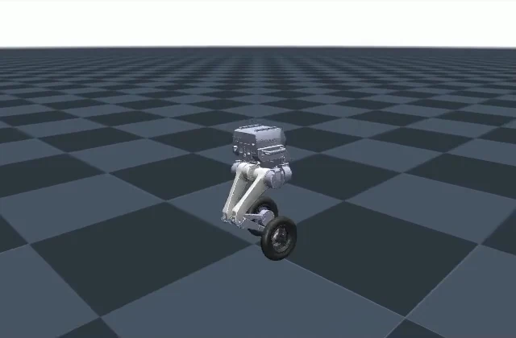

ARCAD
I research control for wheel-legged robots at the University of Michigan’s ARCAD Lab.
Robot Learning · Perception · Contact-Aware Control
I’m a master’s student in Mechanical Engineering at the University of Michigan and a member of the ARCAD Lab, where I research control for wheel-legged robots.
My broader interests span robot learning from demonstrations, perception for manipulation, and planning with learned dynamics.
A recurring question guides these projects: when a robot succeeds in one environment, what remains reliable when contact conditions or model assumptions change? I approach this through cross-simulator evaluation, controlled comparisons, failure analysis, and reproducible experiment records.
I connect algorithms to inspectable software and evaluation: explicit data contracts, recorded rollouts, reproducible configurations, and clearly defined task gates.
I research control for wheel-legged robots at the University of Michigan’s ARCAD Lab.
I developed integration interfaces for an arm–dexterous-hand manipulation pipeline intended to support data collection for VLA post-training. The workflow connects SAM3 and FOUNDATIONpose++ for initial object-pose estimation, RGB-D object-pose updates, and RRT path planning, with motion references from dynamics-based retargeting and PPO (REGRIND).
Completed scope: interface development and integration. Initial integration was mock-only; reliable physical grasping remains unresolved. A planned closed-loop pose-update interface is not evidence of a successful closed-loop grasp.
I explored safety-oriented planning combining vision–language models (VLMs), MPPI and conformal prediction. This work investigates how semantic context and uncertainty estimates can inform planning; it does not establish a certified safety guarantee.
Three connected case studies
Related repositories are grouped by research question. Expand each case study for its component projects, evidence, and limits.
Showing all 3 case studies
01 / DEXTEROUS DEMONSTRATION PIPELINE
I designed DexPipe / VisGen as a demonstration-data pipeline for vision–language–action (VLA) post-training on dual-arm robots with dexterous hands. The engineering problem is to turn human interaction cues into synchronized, embodiment-aware robot data, not just visually similar animation.
DexPipe connects hand–object reconstruction, embodiment-aware arm–hand retargeting, TRON2 / Revo3 control interfaces, and synchronized synthetic RGB–action data. Contact and collision diagnostics test where geometric constraints help and where they create misleading solutions.
Reported diagnostics: Representative median penetration decreased from 6.2 to 1.0 mm; occlusion-mask median IoU was 0.994, and robot visibility covered 98.5% of synthesized frames. These are scoped project diagnostics, not cross-project benchmarks.

TRON1 hockey stop in simulation02 / ROBUST WHEEL-LEGGED ROBOT CONTROL
I study control for TRON1, a two-wheeled legged robot.
03 / WORLD-MODEL PLANNING
In Push-T, a robot pushes a T-shaped block into a target pose. I implemented and evaluated a baseline using a pretrained DINO-WM to predict the effects of candidate action sequences in simulation.
A cross-entropy method (CEM) planner scores predicted rollouts against the goal using visual features and robot state. It executes part of the selected action sequence, observes the scene again, and replans as needed. This experiment evaluates a simulation baseline, not a safety improvement or hardware result.
Additional research reproductions, simulation tools, and engineering projects.
My integration work connects object-pose estimates, path planning and arm–hand control interfaces. I distinguish perception updates and reachable pregrasp targets from reliable physical grasping, which remains unresolved.
Implemented registration, volumetric fusion, and clearance queries; explored combining geometric reconstruction with semantic features.
Reconstructed hand–object contact for dexterous retargeting and analyzed simulated pickup behavior. The study did not establish a policy-learning benefit from contact reconstruction.
Prototyped contact visualization, inverse kinematics, and physics replay for transferring object interactions to a robot hand.
Reproduced a motion-imitation pipeline with a differentiable world model and backpropagation through time. This was a reproduction study, not a new algorithm.
Built a simulation workbench for controller comparisons and inspection of stopping behavior.
Compared how different sampling strategies affect optimizer convergence and closed-loop behavior in contact-rich simulation.
Reproduced core components of a video-guided latent planning pipeline and ran a small simulation pilot.
Prototyped sampling-based selection of steering weights for vision-language-action models. End-to-end control remains unvalidated.
Configured and integrated a self-hosted research assistant with role-specific workspaces, model routing, and memory. This was systems integration, not a rewrite of OpenClaw.
Built a workspace for browsing references, previewing PDFs, and organizing study notes.
Built a read-only dashboard for monitoring GPU workloads and terminal sessions.
Built a chat interface for retrieving Taiwan equity quotes, rankings, and historical data.
I work at the intersection of robot learning, perception and control. Project links provide public documentation; quantitative results retain their evaluation conditions and limitations.